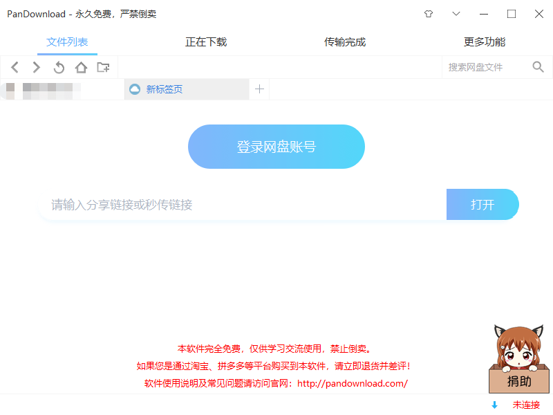
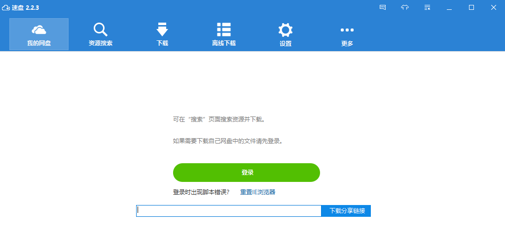
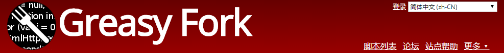
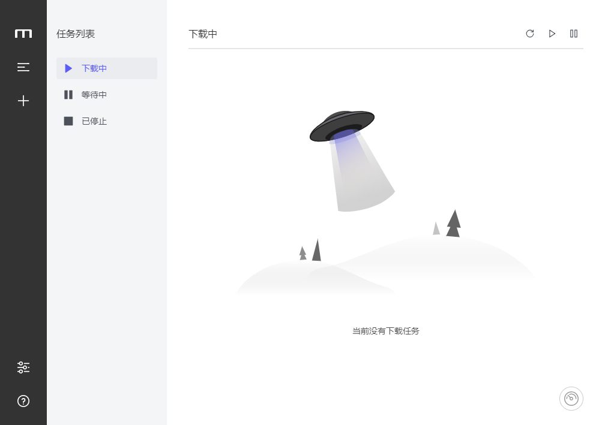
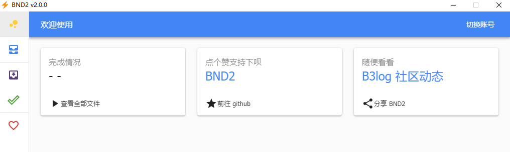

「馨客栈分享」百度云盘资源下载教程总结
由于不可描述的原因，本文章的配套视频地址已经在B站被和谐了
关于视频可以在馨客栈微博里面看，栈友知悉
最新视频地址：百度云盘资源下载视频
本文章最后更新时间：2020-02-13
1.pandownload
官方网站：pandownload
pandownload插件：pandownload插件

2.速盘
官方网站：速盘

3.浏览器脚本下载
此方法最好就是搭配IDM下载工具来食用，效果最佳，当然不稳定因素还是存在的哈，栈友们要好好对待
这里需要注意一下，链接有一些是需要破冰的，不能打开的话你需要懂得穿梭世界的壁垒来看世界的色彩

这里简单介绍一个脚本和食用方法
4.Motrix食用方法
官方网站：Motrix
食用教程：栈主B站专栏详细教程
开源地址：github开源地址
由于百度网盘限制，请登陆百度帐号之后再下载度盘资源，不然肯定下载失败
如果是下载他人分享的文件，建议先“保存到网盘”之后再下载

软件更多功能可以自行体会哈
5.pan-light

6.BND

7.BaiduPCS-Go
开源地址：BaiduPCS-Go
百度网盘客户端 - Go语言编写
多平台支持, 支持 Windows, macOS, linux, 移动设备等
仿 Linux shell 文件处理命令的百度网盘命令行客户端
8.直链在线解析
9.亿寻
官网：点击打开